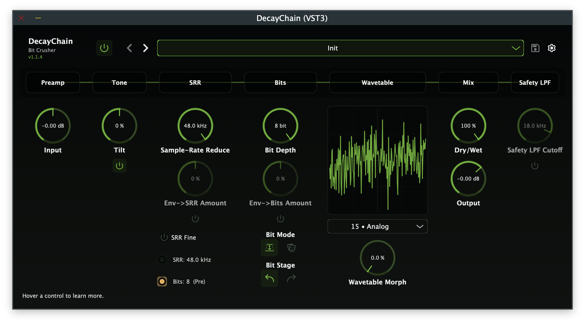

DecayChain
A modern bit-crusher and wavetable distortion plugin. Preamp/tone stage up front, flexible bit logic pre or post the wavetable mapper, 252 original wavetables with hex table index, table morph, envelope routing, and an optional safety LPF. Inspired by the feel of hardware bit-crusher workflows.
- Bit-crusher with Depth (1–8 bits) and Mask (0–255 hex bitmask) modes
- 252 procedurally generated wavetables with hex index & smooth table morph
- Preamp (±36 dB), tilt EQ, sample-rate reducer, envelope routing
- Dual DSP modes: Legacy (crunchy lo-fi) and ADAA (anti-aliased)
- 20 factory presets · VST3 & AU on macOS · VST3 on Windows

Overview
DecayChain is a modern bit-crusher and wavetable distortion plugin that puts a preamp/tone stage up front and offers flexible bit logic either before or after a wavetable mapper loaded with 252 original procedurally generated wavetables.
The signal path flows from a soft-clipping preamp through a tilt EQ, sample-rate reducer, bit section, wavetable mapper with smooth morph between adjacent tables, dry/wet mix, optional safety low-pass filter, and output trim. Envelope routing lets you modulate the SRR frequency and bit depth dynamically.
DecayChain supports two DSP processing modes:
- Legacy — the original processing path. Wavetable lookup uses nearest-sample indexing for a deliberately crunchy, lo-fi character. The bit crusher and wavetable stages operate directly on each sample with no anti-aliasing.
- ADAA — Antiderivative Anti-Aliasing for cleaner harmonics with reduced aliasing artifacts at the base sample rate, combining Simpson's rule ADAA on the bit crusher, LUT integral ADAA on the wavetable mapper, and 2× oversampled soft-clip on the preamp.
Signal Path
Audio flows through a carefully staged chain designed for maximum tonal flexibility:
- Input — incoming audio signal
- Preamp — ±36 dB gain with soft-clip guard at extremes
- Tone — tilt EQ at 800 Hz, true bypass when centred
- SRR — sample-rate reducer (~260 Hz → Fs), with optional Fine mode
- Bit Section — 1–8 bit depth or 0–255 hex bitmask, pre or post wavetable
- Wavetable Mapper — 252 × 256-point tables, hex index 00–FB
- Morph — smooth blend toward adjacent table (0.0–1.0)
- Dry/Wet Mix — equal-power crossfade
- Safety LPF — optional post-processing low-pass filter
- Output Trim — −40 to +6 dB final level control
Key Features
- Dual Bit-Crush Modes: Standard bit-depth reduction (1–8 bits) for classic staircase quantisation, or hex bitmask mode (0–255) for XOR-like logic patterns and unusual harmonic textures.
- Pre/Post Bit Placement: Run the bit section before the wavetable for crushed-then-shaped tones, or after for shaped-then-crushed results. Each ordering produces fundamentally different distortion character.
- 252 Original Wavetables: All procedurally generated (256 samples each, float32), embedded via BinaryData with no external files. Hex index display (00–FB) for precise table selection.
- Smooth Table Morph: Blend seamlessly between adjacent wavetables for evolving timbral transitions. In ADAA mode, anti-aliasing is evaluated independently on both tables and linearly blended.
- Envelope Routing: Route an internal envelope to the sample-rate reducer, bit depth, or both, with bipolar modulation amounts (−1 to +1) for dynamic, input-responsive distortion.
- Dual DSP Modes: Legacy mode for raw, crunchy lo-fi character. ADAA mode combines Simpson's rule on the bit crusher, LUT integral anti-aliasing on the wavetable mapper, and 2× oversampled soft-clip on the preamp.
- Preamp & Tone Stage: ±36 dB preamp with soft-clipping drives the downstream distortion stages. Tilt EQ at 800 Hz shapes the input spectrum before crushing.
- Safety LPF: Optional first-order low-pass (18 kHz default) tames harsh upper harmonics when needed, without affecting the core distortion character.
- Zero-Latency Processing: No latency added to your signal chain. Zero heap allocations on the audio thread, denormal/NaN guards on every nonlinear boundary.
- 20 Factory Presets: From lo-fi samplers and industrial drones to ambient shimmer and bass destruction — with full user preset management.
Controls
| Control | Range | Description |
|---|---|---|
| Preamp | −36 to +36 dB | Input gain with soft-clip guard at extremes |
| Tone | Tilt EQ | 800 Hz tilt EQ; true bypass when centred |
| SRR | ~260 Hz → Fs | Sample-rate reduction with logarithmic sweep |
| Fine | On / Off | Fine-resolution SRR mode |
| Bits | 1–8 / 0–255 | Bit depth (Depth mode) or hex bitmask (Mask mode) |
| Bit Mode | Depth / Mask | Standard bit-crush vs hex bitmask |
| Bit Place | Pre / Post | Bit section before or after wavetable |
| Table | 00–FB (hex) | Wavetable index selection |
| Morph | 0.0–1.0 | Blend toward next adjacent table |
| Key Dest | None / SRR / Bits / Both | Envelope routing target |
| Env→SRR | −1 … +1 | Envelope modulation amount for SRR frequency |
| Env→Bits | −1 … +1 | Envelope modulation amount for bit depth/mask |
| Dry/Wet | 0–100% | Equal-power crossfade mix |
| Safety LPF | On / Off | Post-processing low-pass filter |
| Output Trim | −40 to +6 dB | Final output level control |
| DSP Mode | Legacy / ADAA | Processing mode: raw lo-fi or anti-aliased |
Factory Presets
DecayChain ships with 20 factory presets across a wide range of styles.
| Category | Preset | Character |
|---|---|---|
| Utility | Init | Clean baseline — all defaults |
| Lo-Fi | 8-Bit Sampler | Crunchy 4-bit, pre-table |
| Experimental | Aliasing Heaven | Low SRR, post-table |
| Video | Video Nibble | Mask 0xF0 with morph 0.15 |
| Tape | Lo-Fi VHS | Warm tilt, LPF 9 kHz |
| Digital | Harsh Logic | XOR-like mask 0xAA |
| Drive | Smooth Saturator | Preamp +6 dB, subtle |
| Drone | Industrial Drone | 3-bit SRR 1.5 kHz |
| Drum | Kick Crunch | Punchy, key→Bits mod |
| Drum | Snare Shaper | Crack mask 0xE3 |
| Synth | Synth Lead Edge | Bright, 6-bit |
| Bass | Bass Fuzz Gate | Heavy mask 0xC0 |
| Bass | Bass Iron Riff | Aggressive low-end drive |
| Bass | Bass Spectral Tear | Full-spectrum bass destruction |
| Ambient | Ambient Shimmer | Airy morph 0.9 |
| Ambient | Ice Crystals | Crystalline digital texture |
| Modulation | Envelope Chopper | Rhythmic envelope gating |
| Industrial | Industrial Rhythm Guitar | Harsh rhythmic textures |
| Experimental | Mask Phase | Phase-shifted bitmask artifacts |
| Experimental | Sub Destroyer | Sub-bass obliteration |
User presets are stored as .dcpreset files in:
- macOS:
~/Library/Application Support/Nullform Audio/DecayChain/Presets/ - Windows:
%APPDATA%\Nullform Audio\DecayChain\Presets\
Plugin Formats & Compatibility
| Format | macOS | Windows |
|---|---|---|
| VST3 | ✓ | ✓ |
| AU (Audio Unit) | ✓ | — |
Compatible with any VST3- or AU-compatible DAW including Logic Pro, Ableton Live, Reaper, Studio One, Cubase, FL Studio, Bitwig, and more.
System Requirements
macOS
- macOS 10.15 (Catalina) or later
- 64-bit Intel or Apple Silicon (Universal Binary)
- 4 GB RAM (8 GB recommended)
- ~50 MB free disk space
- Screen resolution of 1280 × 720 or higher
Windows
- Windows 10 or later (64-bit)
- 4 GB RAM (8 GB recommended)
- ~50 MB free disk space
- Screen resolution of 1280 × 720 or higher
Installation
macOS
The macOS release is a signed and notarised .pkg installer.
- Download
DecayChain-<version>.pkgfrom the release page. - Double-click the
.pkgfile to launch the installer. - Follow the on-screen prompts. The installer places:
- VST3 plug-in →
/Library/Audio/Plug-Ins/VST3/ - AU plug-in →
/Library/Audio/Plug-Ins/Components/ - Factory Presets →
/Library/Application Support/Nullform Audio/DecayChain/Presets/Factory/
- VST3 plug-in →
- Open your DAW and scan for new plug-ins. DecayChain will appear under Nullform Audio.
Windows
The Windows release is an Inno Setup .exe installer.
- Download
DecayChain-<version>-Windows.exefrom the release page. - Run the installer. If Windows SmartScreen appears, click More info → Run anyway.
- Choose the installation type:
- Full — VST3 + Factory Presets (default)
- VST3 only — plug-in without presets
- Custom — choose individually
- Open your DAW and scan for new plug-ins. DecayChain will appear under Nullform Audio.
Uninstalling
macOS: Remove the following items:
/Library/Audio/Plug-Ins/VST3/DecayChain.vst3/Library/Audio/Plug-Ins/Components/DecayChain.component/Library/Application Support/Nullform Audio/DecayChain/
Windows: Use Add/Remove Programs (Settings → Apps). The uninstaller removes the VST3 plug-in and factory presets. User presets in %APPDATA% are not touched.